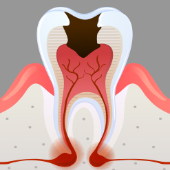
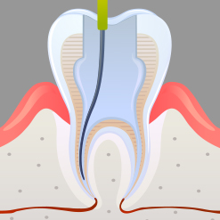
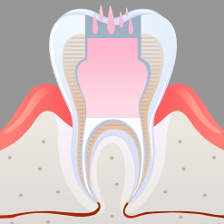
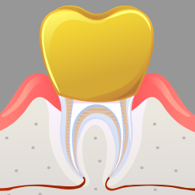

1단계 : 치아뿌리제거
치아를 마취한 후에
치아의 우식부위를 제거하고
치수강을 개방합니다
<%=m_client_en%>
충치 또는 치아 파절 등의 이유로 치아에
통증이 있는 경우에 통증을 느끼게 하는
신경과 혈관 조직을 제거하고
신경관을 생체친화적인 재료로 채워서 치아의 기능을 회복시켜주는 치료입니다.
차갑거나 뜨거운
음식을 먹을 때
시리다
지속적으로
날카롭게 찌르는
통증이 있다
이가 흔들리고
씹을 때 이가
아프다
치아 뿌리 쪽
잇몸에서 고름이
나온다

치아를 마취한 후에
치아의 우식부위를 제거하고
치수강을 개방합니다

병든 치수를 제거하고 근관을 깨끗이 세척한 후,
근관치료기구를 이용하여 근관을 확장하고 모양을 형성

근관을 충전하고 밀봉합니다
수목물을 유지하기 위해 금속기둥(post)을 삽입해야 할 수도 있습니다

치료를 끝낸 치아는
금이나 세라믹으로 씌워서
보호합니다
손상된 신경을 신경치료와 크라운치료를 통해, 치아의 기능을 회복함으로써 치아의 수명을 연장합니다.
일반적으로 신경치료 후 크라운 치료를 받는 비용은 치아를 상실 후 하는 브릿지, 틀니, 임플란트에 비해 비용이 경제적입니다.
무통마취 시스템으로 신경치료시 통증을 줄여줍니다.